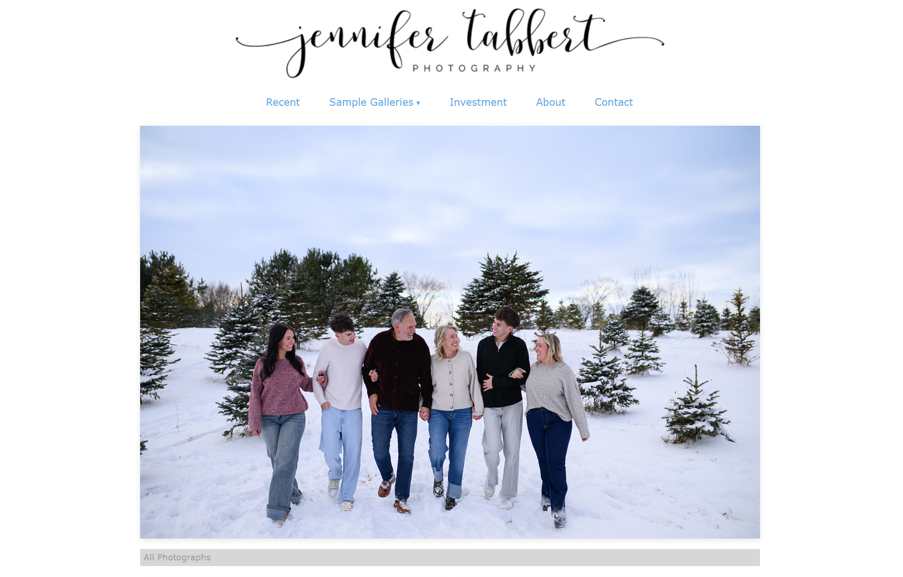
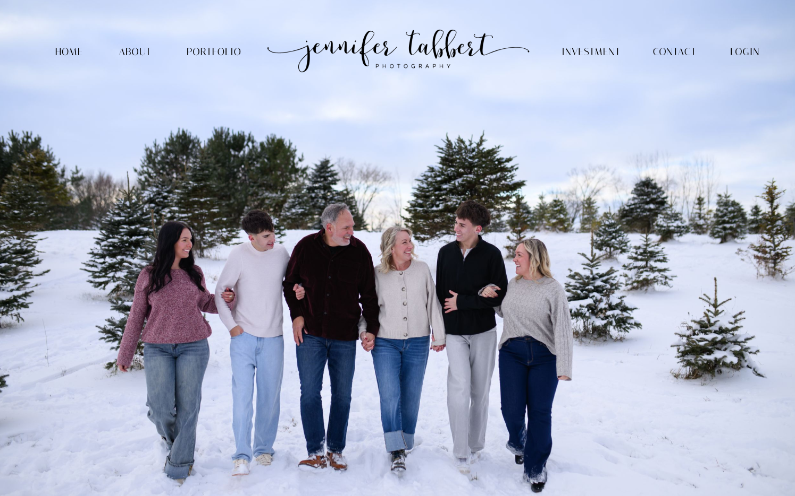
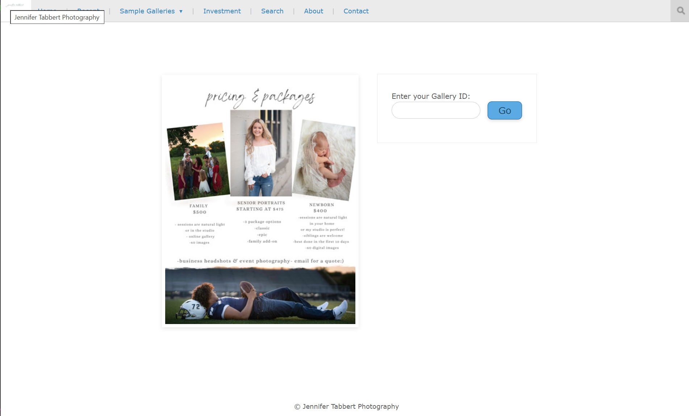
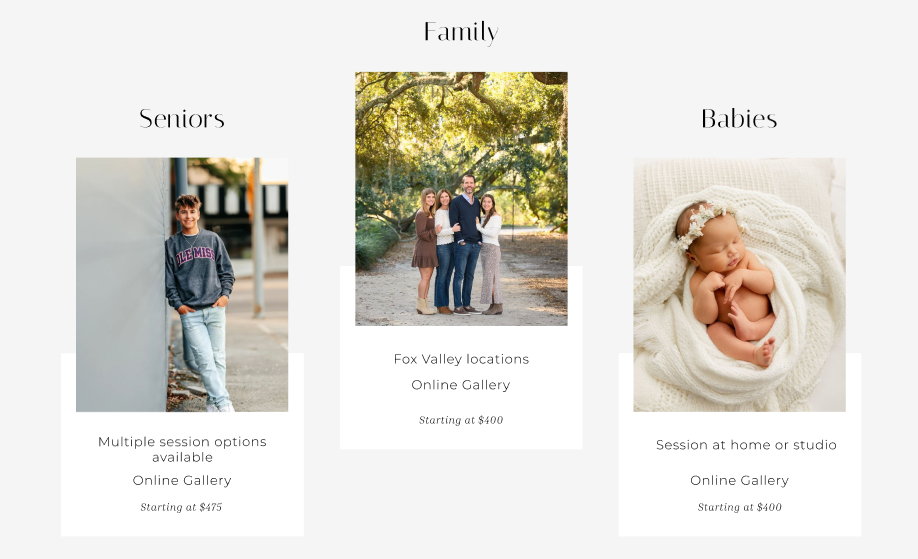
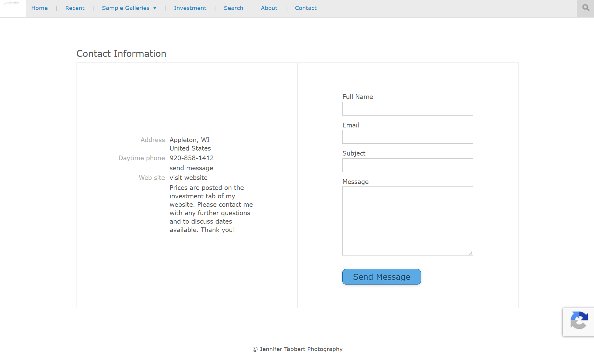
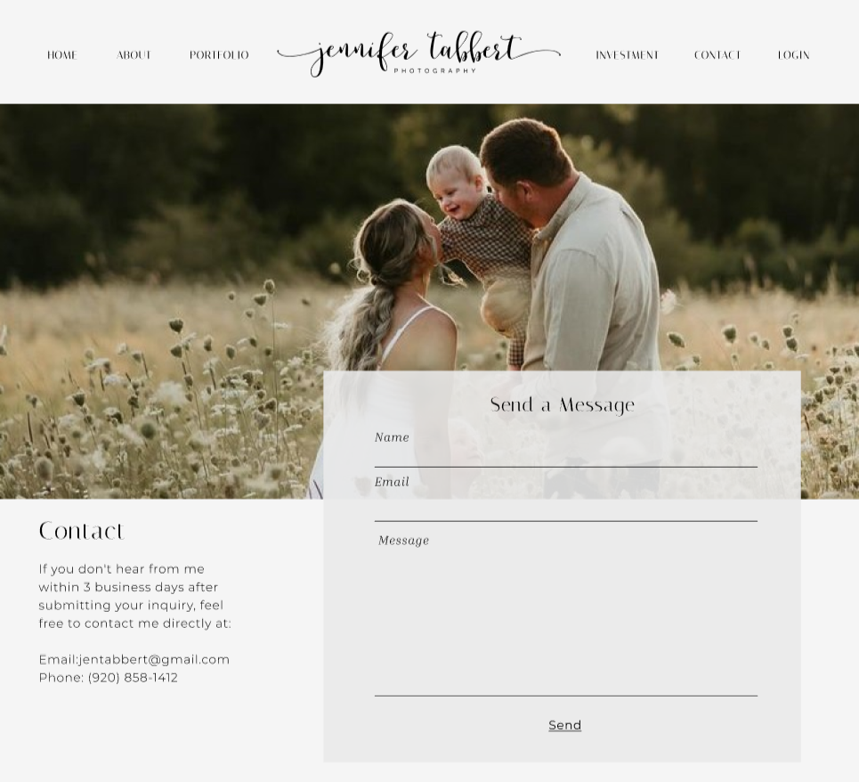

This project is a website redesign for a local small business photographer. After realizing how out of date the current website was, I decided to propose a new website to the business owner. After discussing places to improve this website, I drafted and presented the first set of wireframes. From here, I spent time making adjustments where needed, analyzing opportunities for SEO, and workly closely with the business owner to create an updated website. I used Next.js framework, along with React components, to ensure overall website optimization.
This site is set to launch May 2026.





